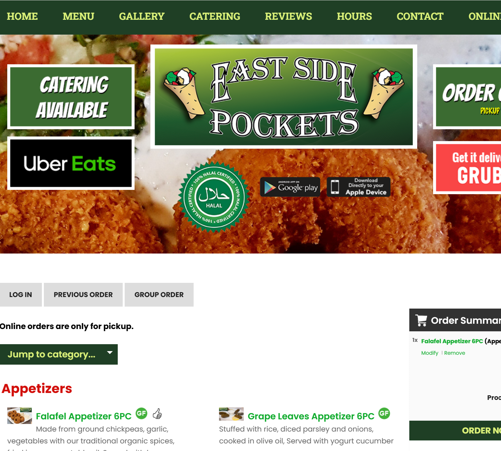
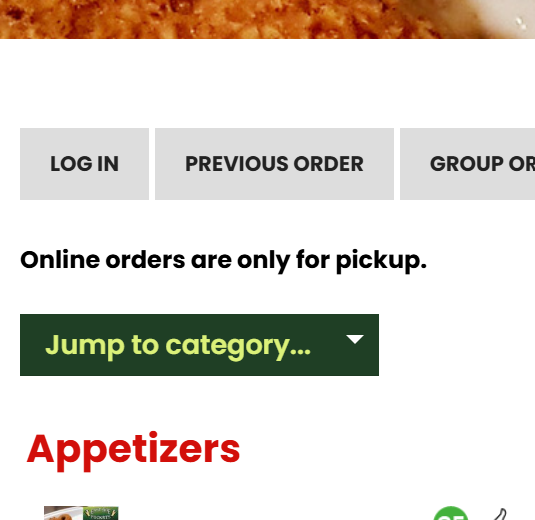
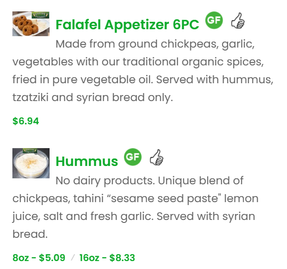

Responsive Redesign
What makes a website well-designed? While it can depend on what the website is designed for, a few central tenets of good design usually hold true: it should be adaptable to many screen sizes, responsive in its interactivity, and accessible to people who might use it in many different contexts.
These qualities nearly universally make the experience of using a website better. For example, picking higher contrast colors to help colorblind users benefits everyone, including those who are also vision impaired; responsive buttons that light up or change size when hovered make sites more intuitive and satisfying for everyone, while especially helping people who are vision impaired. The benefits of flexibility and accessibility are deep and far-reaching.
These qualities nearly universally make the experience of using a website better. For example, picking higher contrast colors to help colorblind users benefits everyone, including those who are also vision impaired; responsive buttons that light up or change size when hovered make sites more intuitive and satisfying for everyone, while especially helping people who are vision impaired. The benefits of flexibility and accessibility are deep and far-reaching.
Choosing a Website
I was assigned to find a website I thought could do better in fulfilling the three tenets I outlined above: adaptability, responsiveness, and accessibility. I thought a good place to start was the website of a local restaurant near me: East Side Pockets in Providence, Rhode Island.
Their website isn't terrible by any means; it serves its purpose and communicates the important information. However, I knew that with some improvements to the three tenets, I could elevate the site from merely functional to easy and satisfying to use.
Their website isn't terrible by any means; it serves its purpose and communicates the important information. However, I knew that with some improvements to the three tenets, I could elevate the site from merely functional to easy and satisfying to use.

A view of the original website's Menu page. The page is chock full of information, but the layout makes some of it hard to find, while overemphasizing less important elements. Below, I'll identify a few key problem areas.
Problem areas
In order to identify the most pressing problem areas, I asked myself what the purpose of the Menu page was, and what was getting in its way. The purpose is twofold: to provide a respository of information about the food they serve, and to allow customers to make online orders through the interface.

Problem 1: Unecessary Components
The large banner below the top menu persisted from the home page to the menu page, where is is unecessary. In a page already cluttered with many different colors, icons, and images, it obscures the important content on the page, making it less efficient, less intuitive, and less accessible for people using keyboard navigation, who may think they went to the wrong page.The top menu also has far too many items, many of which users most likely rarely click on, and could be condensed into a sub-menu.

Problem 2: Lack of Visual Consistency
As exemplified by the buttons at the top of menu, each element on the page has its own unique color and layout. Thus, the visual language of the site is little help in navigating it.Additionally, these buttons, nor the top menu, stick to the top of the page, meaning they're lost when the user scrolls down. This makes the functionality less efficient, less memorable, and less accessible.

Problem 3: Dull and Obscure Presentation
As shown in this image, the main content of the menu itself--the menu items--are presented mostly as blocks of text with minimal visual and spacial organization.Those items with images are so tiny as to be almost invisible, which might make it hard for users ordering online to assess them, and is certainly detrimental to visually impaired users. The icons next to the title lack explanation; users might wonder what a thumbs up means. There is also no obvious place to click to order the items.
While the menu items convey information about the food, they don't do so in a manner conducive to a pleasant online ordering experience.
My Redesign
Using my observations of real users, I constructed two personas, which serve as archetypal representations of qualities from the users I observed. Steve and Carrie are amalgamations of characteristics of my three real users.
Streamlining the Interface
My first peoject was cleaning up the visual clutter of the old page.To this end, I cleaned up the top menu, removed the busy banner below it, and pared down the number of buttons everywhere.
The result is a page that delivers what it needs to to fulfill its purpose, without unecessary distractions and confusing diversions.
Refreshing the Menu
My second task was to make the menu more pleasant to interact with and more straightforwardly informative for online shoppers.By making the image the centerpiece of each item, I help online shoppers while adding visual consistency and appeal. I also improved the icons to stand out visually, and added a button to clarify the user flow for adding items.
The result is a page that's simply nicer to look at, while also being more informative and easier to navigate.
Attention to Responsiveness
While the original page was responsive to differing screen sizes, it did so simply by condensing the content into a smaller space. I wanted a more tailored approach.As the screen gets less wide, the menu items collapse from three rows to two, then finally one, and the images shrink to allow for more items to fit on each page. At phone sizes, the cart info section on the right is replaced by a the same cart icon used for the "Add to cart" buttons.
The result is a page that feels like it was designed for each screen resolution, rather than growing cluttered in smaller screens.

Steve is a university student who has come down with the
flu. He is stressed and disoriented, and wants to avoid human contact.
Steve’s mind is foggy, and he is easily overwhelmed by loud noises and an abundance of visual/audio cues. He doesn’t want to talk to anyone, so the auto request help feature stresses him out. He is fatigued and wants to set his items down, so the stringent but unwritten rules about placing items in the bagging area frustrates him.
Steve represents a user with little patience for inconveniences, who is sensitive to things not going smoothly/how he expects. He wants to be done as quickly and easily as possible. His sickness exacerbates these qualities, but many users might feel similarly to him. Self-checkout kiosks are meant to facilitate efficiency, so it should meet his needs.
Steve’s mind is foggy, and he is easily overwhelmed by loud noises and an abundance of visual/audio cues. He doesn’t want to talk to anyone, so the auto request help feature stresses him out. He is fatigued and wants to set his items down, so the stringent but unwritten rules about placing items in the bagging area frustrates him.
Steve represents a user with little patience for inconveniences, who is sensitive to things not going smoothly/how he expects. He wants to be done as quickly and easily as possible. His sickness exacerbates these qualities, but many users might feel similarly to him. Self-checkout kiosks are meant to facilitate efficiency, so it should meet his needs.

Carrie is a recent graduate who is always looking for ways to save
money. Her roommate gave her a coupon for soap from CVS.
Carrie is a naive user off the CVS self-checkout kiosk. She is motivated to figure it out, but her unfamiliarity and the thought of wasting money makes her anxious. She is overwhelmed by the number of options presented to her at certain junctions, and relies on visual and audio cues to guide her through the process. She likes that the kiosk presents her with multiple opportunities to call for help.
Carrie represents a user who is unfamiliar with the interface and has a specific use-case in mind. She is the user who needs the interface to tell her exactly what to do, whether explicitly or through affordances and design. Self-checkout kiosks are meant to be intuitive for a wide array of users, so it should meet her needs.
Carrie is a naive user off the CVS self-checkout kiosk. She is motivated to figure it out, but her unfamiliarity and the thought of wasting money makes her anxious. She is overwhelmed by the number of options presented to her at certain junctions, and relies on visual and audio cues to guide her through the process. She likes that the kiosk presents her with multiple opportunities to call for help.
Carrie represents a user who is unfamiliar with the interface and has a specific use-case in mind. She is the user who needs the interface to tell her exactly what to do, whether explicitly or through affordances and design. Self-checkout kiosks are meant to be intuitive for a wide array of users, so it should meet her needs.
Storyboarding
A storyboard is a way for designers to respresent a hypothetical user experience using personas to emulate a real user navigating an interface. My storyboard takes us through Carrie's experience using the CVS self-checkout kiosk.